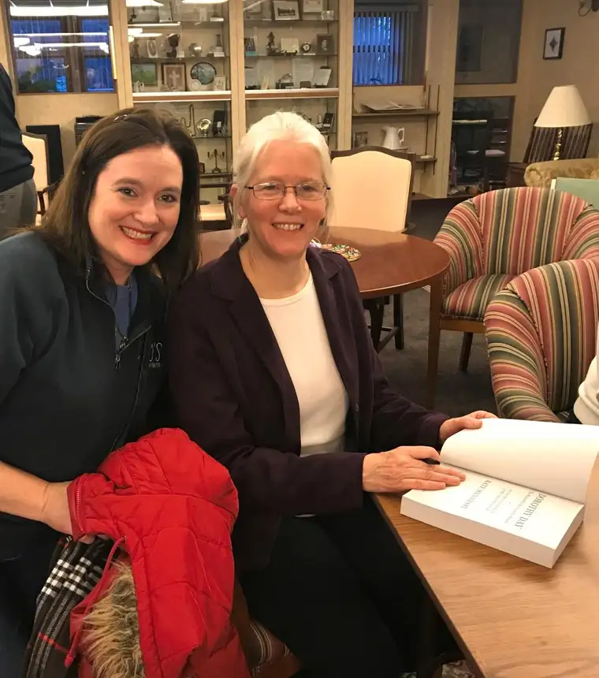

I’ve long admired Dorothy Day, ever since my college spiritual mentor, Father Bill Mehrkens, introduced her through his homilies and the Dorothy Day “Home of Hospitality” House he helped found in Moorhead.
But until recently, Dorothy was mostly just an icon to me.
I knew of her as someone with a great heart for the downtrodden, who was regretfully post-abortive but later had a daughter whom she dearly loved, and one who came to faith at a difficult time, then clung with tenacity to God.
I knew, too, of the controversy surrounding her, how some called her a communist, and that she’d spent time in jail for protesting for civil-rights causes.
But until recently, I’d only skimmed the surface, and now, I feel I know her as well as one can the dead, thanks to Kate Hennessy, who fashioned a beautiful tribute to her “Granny” through her book, “Dorothy Day: The World Will Be Saved by Beauty: An Intimate Portrait of My Grandmother.” The book, my summer indulgence, accompanied me to Mexico, Itasca State Park and other summer destinations. Within its exquisitely-woven passages, I rediscovered my love of book-reading, and the edification of traveling alongside another soul yearning for God.
The space I have here won’t do Dorothy justice, but I’ll share generally what Hennessy did — that this book is as much about her mother, Tamar, as her grandmother. More than anything, it’s about complicated relationships, and how love can emerge in the most miraculous ways through them.
Through Hennessy’s laboring, I met Dorothy as a mother who sacrificed other pursuits to spend time with her family, and who, even after they’d all left the church, kept attending Mass and stayed grounded in the Psalms, which she took almost like one does sweetener with her coffee every morning.
As Hennessy put it, “The church was the community, (Dorothy) felt, and Mass became a time to stop and take note of the sunlight and of her fellow human, to take a breath and feel God touching the heart and the mind.”
I met a fellow writer who called writing prayer, work and a form of activism. “We write what we suffer,” Dorothy once said.
Hennessy observed: “Dorothy’s meandering voice…lulls you into a sense of listening to a story as comforting as a lazy river, running through a hot summer’s day — until she wallops you with the realization that you need to change your life and you need to do it now.”
Isn’t that something we should all feel as people of God — an urgency to change?
Dorothy’s family squirms at the notion of her possibly being canonized — a process currently underway — but I hope it comes to pass. For if Dorothy Day, in all her moods and imperfections, can become a saint, perhaps I can, too.
[For the sake of having a repository for my newspaper columns and articles, I reprint them here, with permission, a week after their run date. The preceding ran in The Forum newspaper on Sept. 29, 2018.]